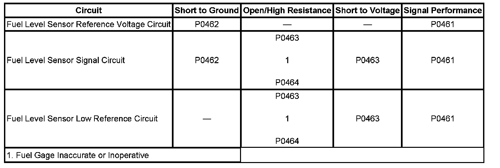

P0461
DTC P0461
DTC DESCRIPTOR
DTC P0461
Fuel Level Sensor 1 Performance
DIAGNOSTIC FAULT INFORMATION

Perform the Diagnostic System Check - Vehicle prior to using this diagnostic procedure. Initial Inspection and Diagnostic Overview
CIRCUIT/SYSTEM DESCRIPTION
The fuel level sensor changes resistance in response to the fuel level. The engine control module (ECM) monitors the signal circuit of the fuel level sensor in order to determine the fuel level. When the fuel tank is full, the sensor resistance is low and the ECM senses a low signal voltage. When the fuel tank is empty, the sensor resistance is high and the ECM senses a high signal voltage. The ECM uses the signal circuit of the fuel level sensor in order to calculate the percentage of remaining fuel in the tank. The ECM sends the fuel level percentage via GMLAN serial data circuit to the instrument cluster in order to control the fuel gage. The fuel information is also used for misfire and evaporative emission (EVAP) diagnostics.
This diagnostic tests for a stuck fuel level sensor signal. The ECM sets this DTC if the fuel level sensor signal appears to be stuck based on a lack of signal variation expected during normal operation.
CONDITIONS FOR RUNNING THE DTC
The engine is running.
CONDITIONS FOR SETTING THE DTC
The ECM detects a change in fuel level less than 10 liters (1.3 gallons) over a distance of 241.4 km (150 miles).
ACTION TAKEN WHEN THE DTC SETS
- The fuel gage defaults to empty.
- The low fuel indicator illuminates.
- The ECM records the operating conditions at the time that the diagnostic test fails. The ECM displays the failure information in the Failure Records on the scan tool.
CONDITIONS FOR CLEARING THE DTC
- The DTC becomes history when the conditions for setting the DTC are no longer present.
- The history DTC clears after 40 malfunction-free warm-up cycles.
- The ECM receives a clear code command from the scan tool.
CIRCUIT/SYSTEM TESTING
1. Ignition OFF, remove the fuel level sender and verify that there is no obstructions interfering with the fuel level sender.
- If interference is present, remove the obstruction.
2. If no interference is present, replace the fuel level sender.
REPAIR INSTRUCTIONS
Perform the Diagnostic Repair Verification after completing the diagnostic procedure.
- Fuel Level Sensor Replacement (1500 Series) Fuel Level Sensor Replacement (1500 Series w/E85) Fuel Level Sensor Replacement (2500 - 43.5L (11.5 gal) Tank - Rear) Fuel Level Sensor Replacement (2500 - 98.4L (26 gal) Tank - Front) for the 4.8L, 5.3L, 6.0L, and 6.2L engines
- Control Module References for the ECM replacement, setup, and programming. Programming and Relearning Verification Tests